来源：https://blrwwxfhox.feishu.cn/docx/UWwMdKEpvogk5cxdEp9cxOAhnDg
首先，先自我介绍一下。
我叫小紫，今年是我在跨境电商行业的第七年了。
从0-1做过千单爆款，转化率高达79.3%。
目前是多家深圳跨境亿级卖家企业顾问。
我不定期会给大家分享一下专业知识，当作对自己的一个沉淀。
也希望在此，能够结识更多同行的朋友一起互相交流。
我平时被问得最多的问题，就是：你的产品转化是怎么做那么高的，79.3%？
在这里回答一下，
1 常规品类，不是口罩类目
2 上架，广告，售后，自己0-1全盘操手千单爆款
3 做转化，对我来说是一件很简单的事。
今天借此机会，给大家分享一下，我做转化的一些心得。
影响转化率的因素，有许许多多。
图片、文案、标题、五点、价格、RV、活动、竞品等等。
一篇文章，是肯定讲不完的。
光竞品，都可以讲个几个小时。
有时间我准备做一期合集，以后慢慢分享给大家。
今天想先和大家分享：转化的核心 —— 图片。
有一定体量的卖家都知道，
亚马逊做到后期，比拼的是什么？供应链。
没有供应链呢？那就是运营力。
运营力的核心，不是广告，也不是价格。
是一种能把10刀的产品，卖出20刀的能力，有利润，企业才能生存。
“怎么把一瓶矿泉水卖300块？”
这个话题在知乎上有7000多人关注。
我一向不感冒这类问题，不过这是现状。
你看这两张图，你觉得有什么区别？
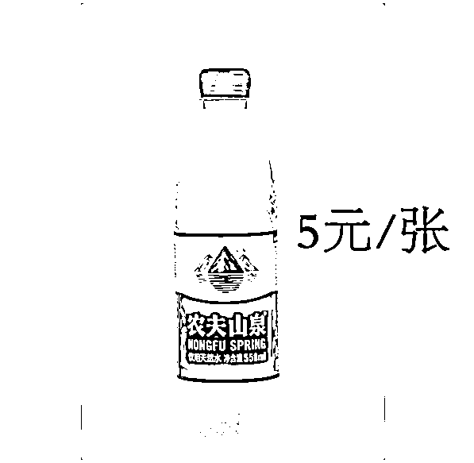
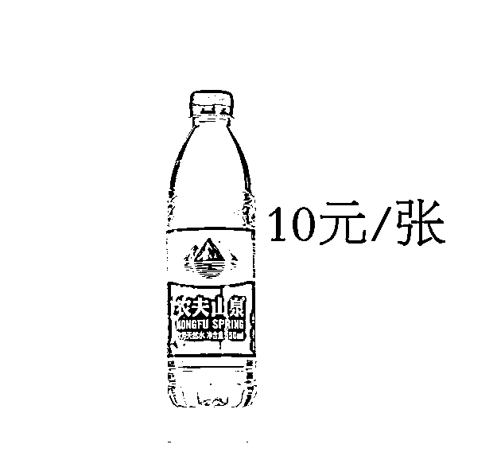
自从电商行业兴起，就一直流传一句话。
“电商卖货就是卖图片。”
产品开发往往认为自己开发的产品是独一无二的。
有时候，产品成功销售不仅仅取决于它的质量和功能。
还取决于市场营销和宣传的效果。
网络购物，消费者无法直接触摸和感受产品。
他们主要通过图片和描述来了解商品。
作为卖家，我们就需要通过图片和文字。
精准传达产品的信息和价值。
核心是：增加产品溢价空间，寻找价值被高估的场景。
这其实是很多卖家都知道，同时，又是许多卖家所忽视的。
甚至一些亿级大卖，因为公司流程化的运营方式。
图片都是美工批量处理，和运营不见得沟通到位。
我对内部团队的设计，永远贯彻这五大要求：
1 差异的印象：是否具备差异的印象使该产品能在一堆相似的产品中被消费者选中
2 具有可读性：是否具有可读性能让消费者轻松了解该产品的基本信息
3 美观的外表：是否有美观的外表能抓住消费者的眼球给消费者享受的视觉体验
4 醒目的商标：是否有明显的商标印象，商标足够醒目才能让消费者对该厂商产生深刻印象
5 齐备的功能：是否有齐备的功能能保证产品的存储且易于消费者使用
大家也可以时常审视一下自己的图片
问问自己，是否能达到这五个标准。
很多时候，运营对公司的设计师不满意。
说他们做出来的图片难看，不尽人意。
其实可能是提需求的时候，就出了问题。
图片需求的核心，一定要抓住三个要点：
1 简单简约
2 逻辑梳理
3 语句精简
其中，最重要的则是，逻辑的梳理。
因为每张图片，都有它自己的职责。
这也是最容易出现问题的环节。
让大家提一个简单、言语精简的需求，大家都能提出来。
但逻辑清晰的需求，基于哪些内容呢？
我自己梳理了一套爆款图片逻辑，在这里无偿分享给大家。
内容很多，考虑到会给大家带来一些阅读乏力感。
我接下来捡重点，用最通俗的话术，讲核心点。
第一张，主图，承担着点击率的重任。
尺寸多大、白底、符合亚马逊规定...这些基础要求我就不讲了。
只讲主图最重要的一个点。
即，告诉大家，我们卖的产品是什么？
在此基础上，要无限放大产品质感。
一定要精修，就是加一些磨砂感、哑光、打光位置、阴影等细节处理。
使得图片看起来高级、有质感。
有条件的，一定要渲染效果。
核心公示：质感=材质+颜色+光线处理
大家可以感受一下这两张图。
黑色的产品，是我们公认最好做质感的颜色。
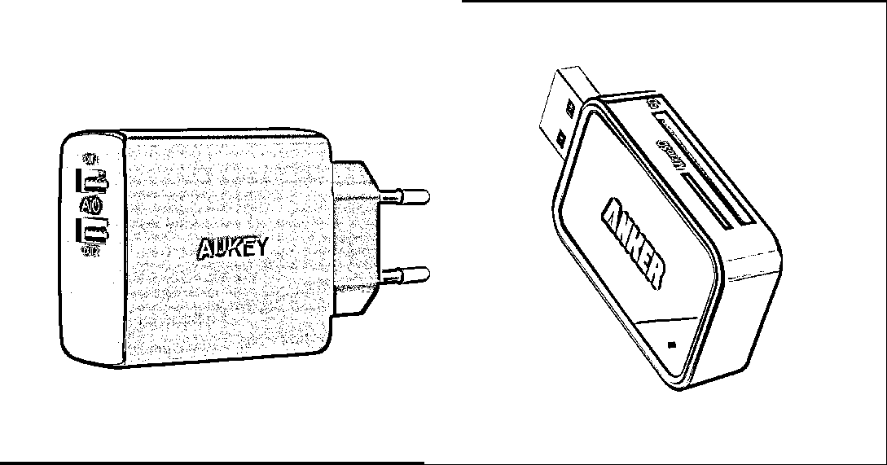
第二、三张图，突出核心卖点
核心卖点图，对提升一个产品的转化率，至关重要。
有工具统计过，买家在亚马逊listing上停留时间平均为2秒。
营销里有一个三秒法则，但运用到短平快的电商上，浓缩为一秒原则较为合适。
旨在一秒钟，快速抓住消费者的注意力，传达有效的信息。
我见过很多运营，想说的内容很多。
做出来的图片，杂乱无章，你不知道他想表达什么。
这种情况，一定要前期做好市调，根据目标人群，直观展示产品核心卖点。
还有那种，抓住了核心卖点，但表达方式很直白。
上来就＜20dB、150PSI、1000mAh...
客户其实只想知道，使用期间，我的感受是什么？
所以，这两张图，核心步骤有三点：
1 通过市场调研，提炼产品卖点
2 客户角度出发，突出核心卖点
3 带入使用场景，解决客户痛点
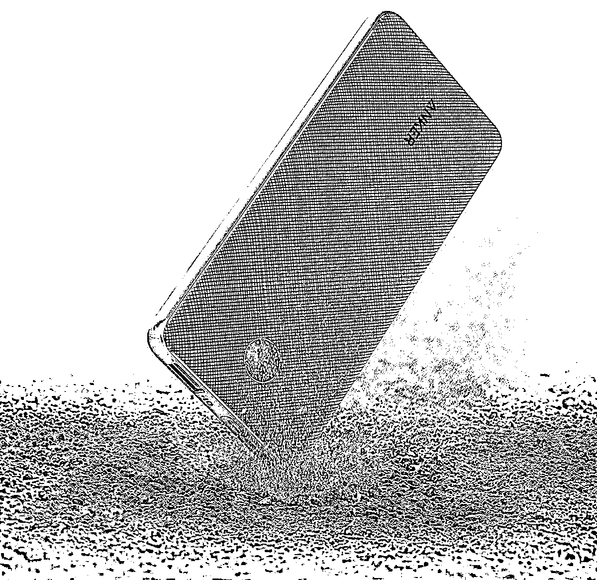
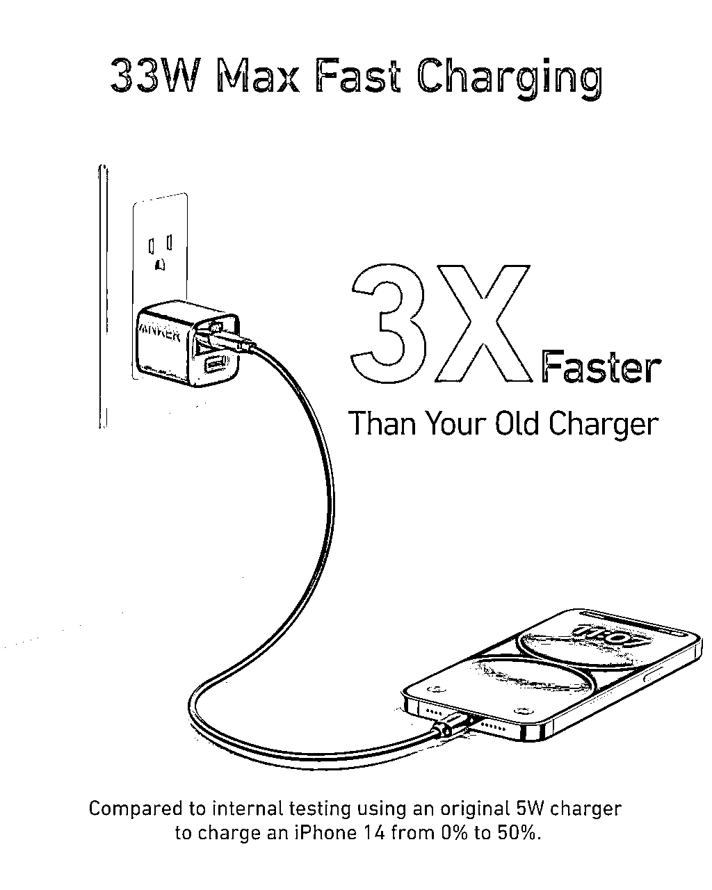
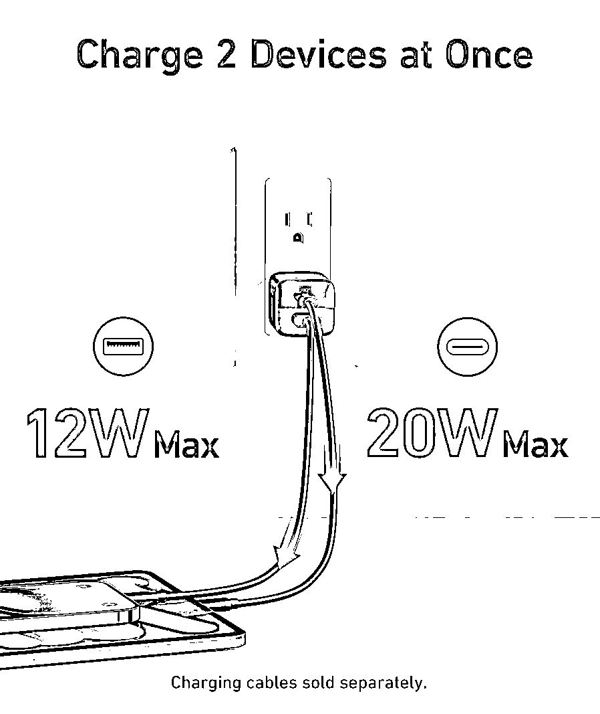
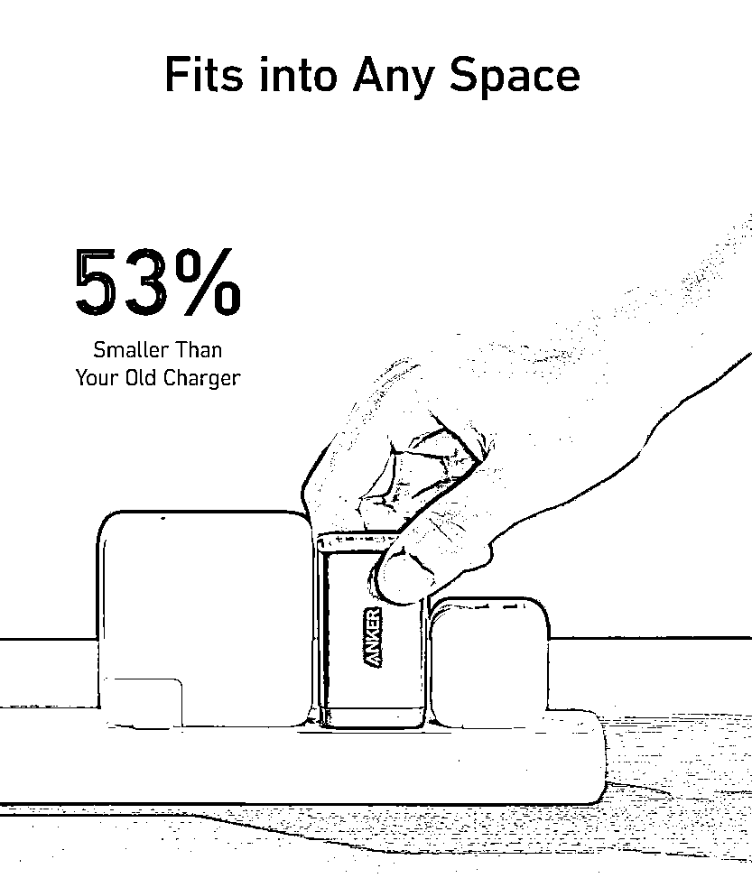
第四、五张图，产品的多样性
核心卖点展示完之后，接下来需要重点突出：产品的多样性。
前面几张图，用户对于产品有了一些认知，产生了兴趣。
就需要在 产品设计细节 和 产品使用场景 上去进一步凸显产品的品质感，增加转化概率。
例如，电子产品内部结构拆解、多样化适配性，服装的多配色、适肤度...
厨房类，加入一些看起来垂涎欲滴的细节美食图，这时候，客户很可能会直接下单。
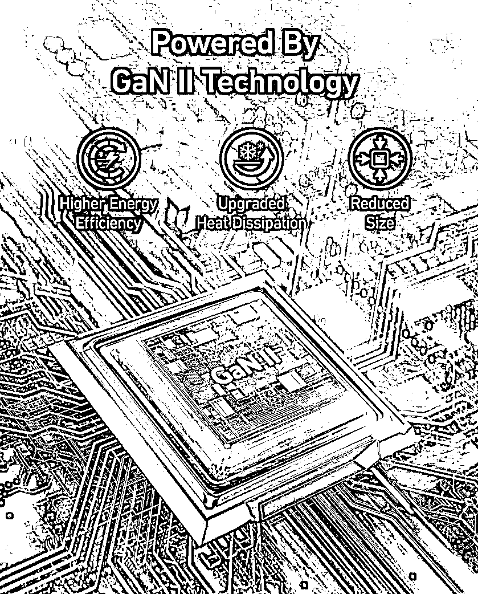
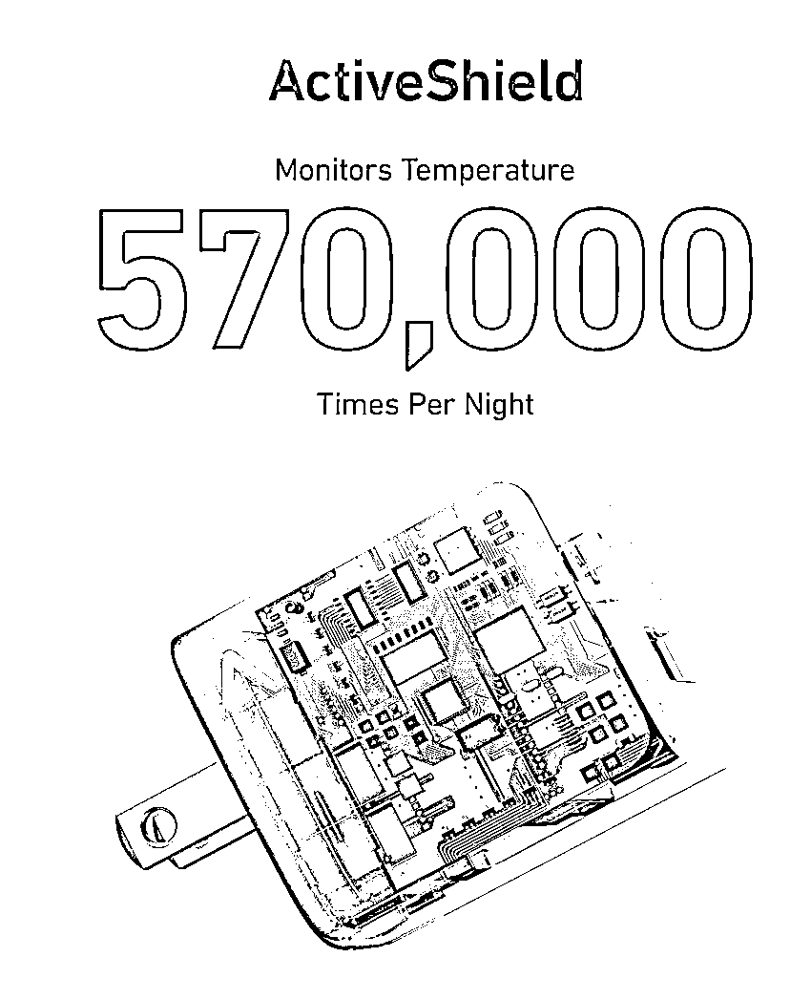
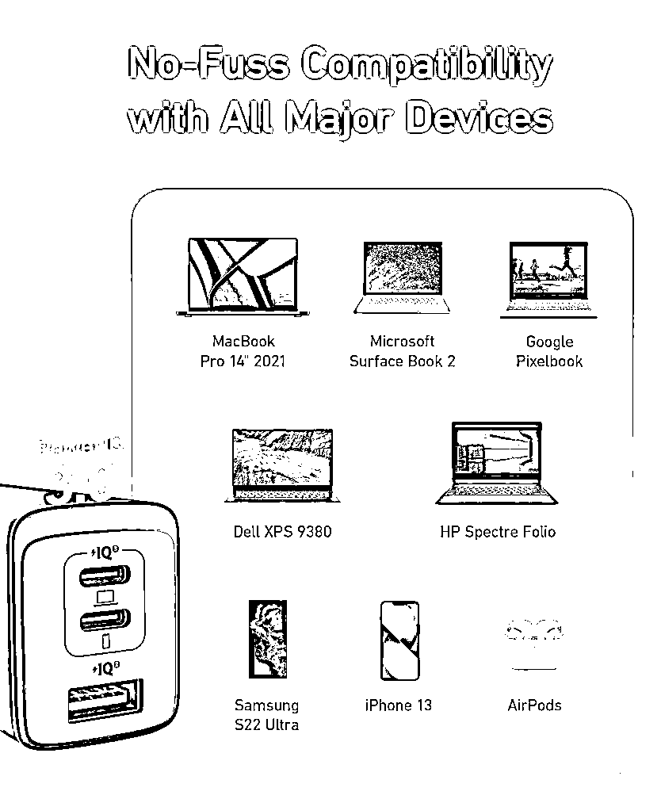
第六、七张图，增加信任感
最后，我们要终极一招。
能看到第七张图，证明客户在你的页面至少停留5s。
此时，我们六、七张图的任务则是：打消用户顾虑，增加信任感，实现转化。
大家都知道，亚马逊PC端，第七张的位置一般都显示视频（如果有上传的话）
那么第六张图，可以作为展示产品的多样性，同4、5。
比如，高单价的、电子产品、健康相关、器械类是有强售后需求的。
那么第六张图一定要作用于增加客户信任感。
反之，低单价的，手机壳、数据线等等则可以更多结合使用场景去突出产品多样性。
那我们如何增加客户信任感？
简单来说，就是给用户一个不得不买你产品的理由。
大家首先想到的，可能是专业的认证。
这些认证有当然好，但对于大部分卖家来说并不是那么简单就能申请的。
这里直接给大家提供几个实用小技巧：
1 善于利用客户评论
2 善于建联环境保护
3 善于利用站外背书
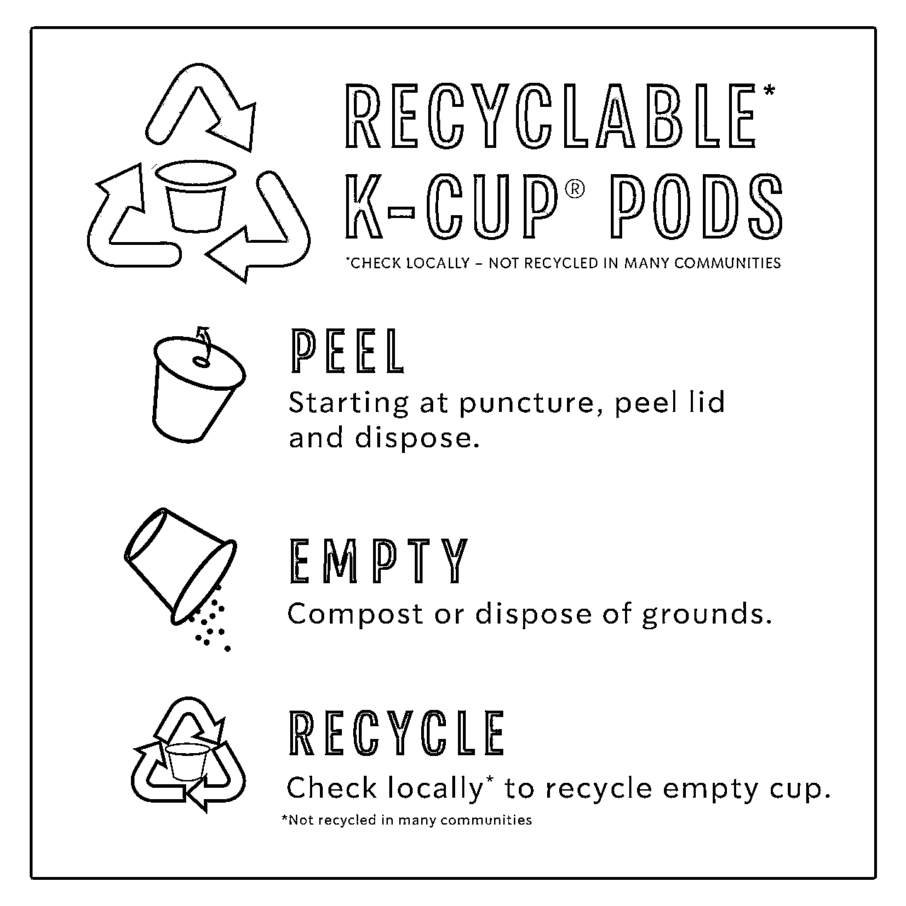
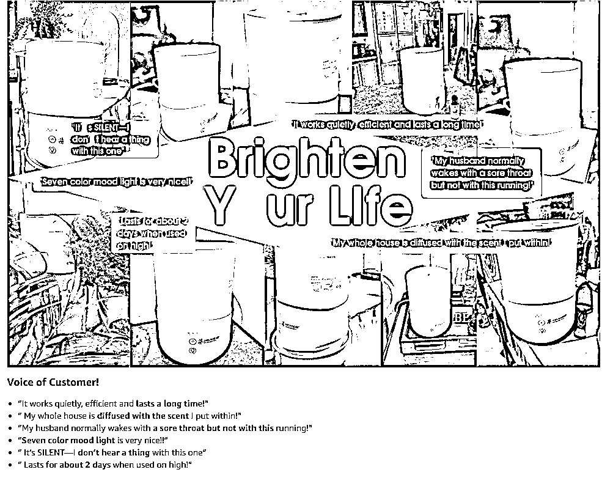

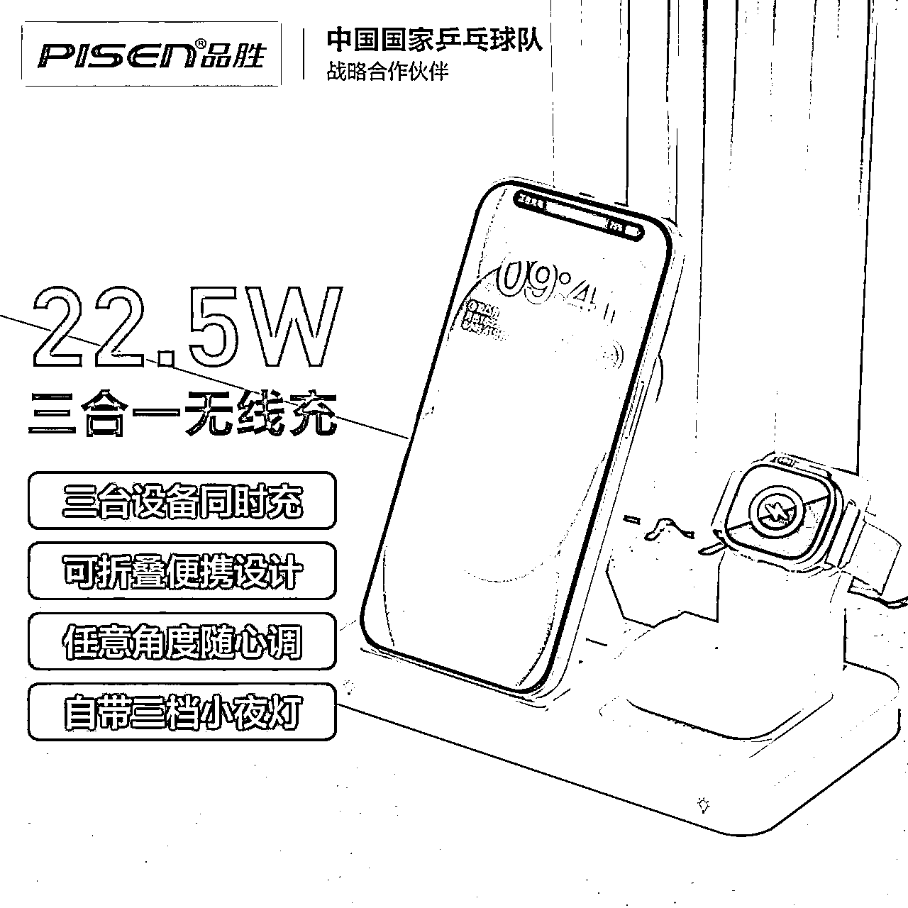
我是做3C品类的。
所以我的素材库里面，收集了许多3C类产品的图片。
表达卖点：有体现适配性的、拆机的、兼容性的、尺寸等等。
创新元素：有拟人化的、卡通化的、金属朋友类型的等等。
展现形式：侧面、正面、俯视等等。
颜色区分：黑色系、撞色系、简约白等等。
还有各类型的视频展示。
毫不夸张的说，接近3个T，专门用一个硬盘保存着。
看到一款新品，我的脑海中会闪过那些素材库的内容。
就知道他怎么做图好看。
不要求大家都做到这种程度。
但大家可以从今天开始，沉淀自己的素材库。
沉淀素材库，步骤分为三步：收集、整理、查找。
收集，可以先收集亚马逊TOP前50的链接，你觉得好的图片。
接着整理分类，做文件夹分级整理。
分级整理的时候，每张图片要命名关键词，比如：充电宝 白色 拆解；手机壳 撞色 卡通。
这是我的命名习惯，你可以按照自己的来。
其实好的图片，从来都没有标准。
最重要的是抓住客户的情绪，其次才是和环境的糅合。
并且将这些情绪加之合适的光影和意象，最后诠释出来。
最后，
想了解更多亚马逊图片设计相关的内容（可以私我，备注图片）

祝大家转化率都翻倍！
祝每一位在奋力向上的人，都实现自己今年的目标！
全文完。
以下是我的经典文章，99%关注我的人都会阅读，建议你一定要好好看一看：
精细化运营法：
干货型：
职场经验型：
如果觉得小紫的这篇文章聊得还挺有趣
欢迎来交个朋友~